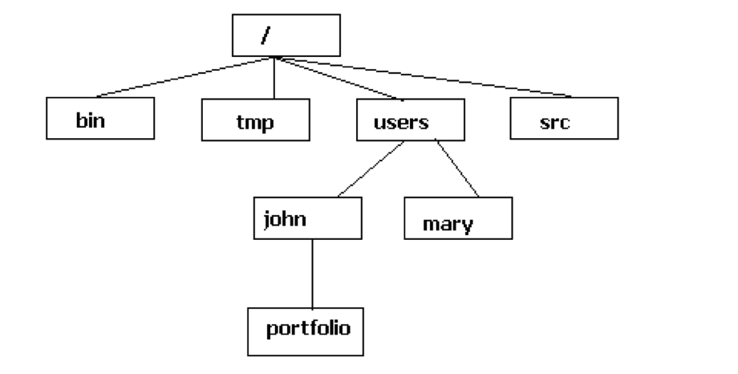
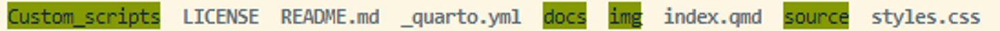
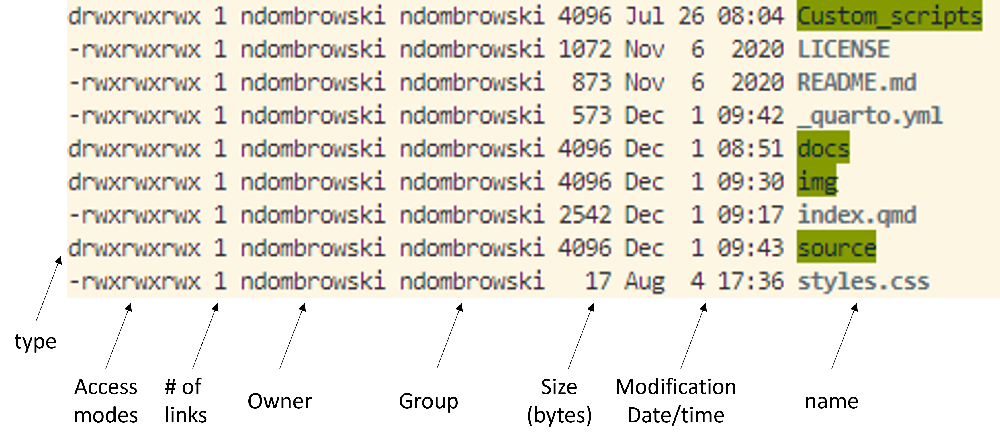

man lsWorking with files and folders
Tip
New to the command line? The Getting started with bash and an HPC tutorial explains these commands step by step. This page is a reference: it lists the key commands with short examples.
Quick reference
| Command | What it does | Example |
|---|---|---|
pwd |
Print the folder you are in | pwd |
ls |
List the content of a folder | ls -lh downloads |
cd |
Move into another folder | cd downloads |
mkdir |
Make a new folder | mkdir -p results/qc |
touch |
Make a new, empty file | touch notes.md |
cp |
Copy a file (-r for a folder) |
cp a.txt backup/ |
mv |
Move or rename a file or folder | mv a.txt b.txt |
rm |
Remove a file (-r for a folder) |
rm a.txt |
wget |
Download a file from a link | wget -P downloads <link> |
gzip |
Compress a file (-d to decompress) |
gzip -d genome.fna.gz |
zcat |
Print a compressed file without decompressing it | zcat reads.fastq.gz |
tar |
Pack or unpack a tar archive | tar -xzf archive.tar.gz |
man |
Show the manual of a command | man ls |
For commands that work on the content of files, see Working with text files.
The file system
The file system on Unix (Linux and Mac) looks something like this:

- Unlike Windows, Unix does not use drive letters (C:, D:). All files and folders are in one tree.
- The first folder in the tree is the root directory, written as
/. - Your personal folder is your home directory, written as
~. Where it is depends on your system:- Mac:
/Users/YourUserName - MobaXterm (Windows):
/home/mobaxterm - WSL2 (Windows) and Linux:
/home/YourUserName
- Mac:
The structure of a command
A command generally has three parts:
command [options] [arguments]
- A command name: the program you want to run, e.g.
ls - An option (or flag): a way to change how the command behaves. Options usually start with a
-. Many options have a short and a long form, e.g.ls -aandls --allboth also show hidden files - An argument: the input the command works on, e.g. a file or folder. Some commands work without an argument
Getting help
To see the options of a command, open its manual. You exit the manual by pressing q:
Not all programs come with a manual. Depending on the program, there are a few common ways to get help that you can try:
man lsls --help-h, e.g.seqkit -h. Be careful: for some commands-hmeans something else. Forls,-hprints file sizes in a human-readable format (e.g.ls -lh)
pwd: Finding out where we are
pwd (print working directory) prints the folder you are in right now, the working directory. When you open a new terminal, you start in your home directory.
pwdls: Viewing the content of a folder
ls (list) shows the files and folders in a folder. Without an argument, it shows the content of the working directory:
lsIn my case this returns something like this. Folders and files have different colors, depending on your terminal settings:

Useful options:
# Long format: access rights, owner, group, size, date of last change and name
ls -l
# Long format with file sizes in a human-readable format (K, M, G)
ls -lh
# Also show hidden files (names that start with a dot)
ls -a
# Sort by date of last change, newest first
ls -lt
# List the content of another folder
ls -l downloadsThe long format looks like this:

The first column shows the access rights. See Access rights for how to read and change them.
cd: Moving around folders
cd (change directory) moves you into another folder:
# Move into the downloads folder (change this to a folder that you see with ls)
cd downloads
# Move one level up, into the parent folder
cd ..
# Move several levels at once: into downloads, back up, and into results
cd downloads/../results
# Move into your home directory
cd ~
# cd without an argument also moves you into your home directory
cdAbsolute and relative paths
A path tells the shell where a file or folder is. There are two kinds:
- An absolute path starts at the root directory
/and lists every folder down to the file, e.g./Users/username/Desktop. It works from wherever you are. - A relative path starts at the working directory, e.g.
Desktop. It only works from the right folder. Two special names help here:.(dot) is the working directory itself..(dot dot) is the parent folder of the working directory
# Absolute path: works from anywhere
cd /Users/username/Desktop
# Relative path: works only if you are in /Users/username
cd Desktopmkdir: Making new folders
# Make a new folder called playground in the working directory
mkdir playground
# Make a folder and its parent folders, if they do not exist yet
mkdir -p results/qc/fastqc
# Check that the folders were created
ls -l . results results/qctouch: Making an empty file
touch makes a new, empty file. To write text into a file, use a text editor such as nano.
# Move into the playground folder and make an empty file
cd playground
touch random.txt
# Check: the file exists and has a size of 0
ls -lcp and mv: Copying and moving files
cpcopies files (and folders, with-r)mvmoves or renames files and folders
The examples below run inside the playground folder from above.
# Make a new folder
mkdir our_files
# Copy random.txt into the new folder
cp random.txt our_files
# Check: random.txt is now in both folders
ls . our_files
# Move random.txt into the our_files folder
# There is already a random.txt in our_files, so mv overwrites it without asking
mv random.txt our_files
# Check: random.txt is now only in our_files
ls . our_files
# Rename a file: "move" it to a new name in the same folder
mv our_files/random.txt our_files/notes.txt
# Copy a folder and everything inside it
cp -r our_files our_files_backup
# Check the result
ls -l our_files our_files_backuprm: Removing files and folders
Warning
Unix does not have an undelete command.
Therefore, if you delete something with rm, it’s gone.
So use rm with care and check what you wrote twice before pressing enter!
# Remove a file
rm our_files/notes.txt
# Check that the file is gone
ls -l our_files
# Remove a folder and everything inside it (-r = recursive)
rm -r our_files_backup
# Check that the folder is gone
ls -lwget: Downloading data
wget downloads a file from a link. With -P we choose the folder to download into:
# Make a folder for our downloads
mkdir downloads
# Download a genome from NCBI into the downloads folder
wget -P downloads ftp://ftp.ncbi.nlm.nih.gov/genomes/all/GCA/002/728/275/GCA_002728275.1_ASM272827v1/GCA_002728275.1_ASM272827v1_genomic.fna.gz
# Check that the file is there and see its size
ls -lh downloadsgzip: Compressing files
Compressing data using gzip
Files that end with .gz are compressed with gzip. Sequence data is usually stored this way, because it saves a lot of space.
To decompress a file, use gzip -d. This replaces the .gz file with the decompressed file:
# Decompress the file (-d = decompress)
gzip -d downloads/GCA_002728275.1_ASM272827v1_genomic.fna.gz
# Check: the file lost its .gz extension and is larger now
ls -lh downloadsConversely, if you want to compress a file, you can do this as such:
# Compress the file
gzip downloads/GCA_002728275.1_ASM272827v1_genomic.fna
# Check: the file has its .gz extension back
ls -lh downloadszcat: Viewing compressed files
zcat prints the content of a compressed file to the screen, without changing the file. Combine it with head (see Pipes) to only see the first lines:
# Print the first 10 lines of a compressed file
zcat downloads/GCA_002728275.1_ASM272827v1_genomic.fna.gz | headOn a Mac, zcat may not work with .gz files. Use gzcat or gunzip -c instead.
tar: Packing many files into one
A tar file (short for Tape Archive, also called a tarball) packs many files and folders into one file. A tar file is often compressed with gzip and then ends with .tar.gz or .tgz.
The most common tar options are:
| Option | Meaning |
|---|---|
-c |
create a new tar file |
-x |
extract a tar file |
-t |
list the content of a tar file |
-z |
(de)compress with gzip |
-v |
verbose: print each file name |
-f |
the name of the tar file follows |
-C |
extract into this folder |
# Decompress the genome
gzip -d downloads/GCA_002728275.1_ASM272827v1_genomic.fna.gz
# Create a compressed tar file, to_compress.tar.gz, from the downloads folder
tar -cvzf to_compress.tar.gz downloads
# List the content of the tar file without extracting it
tar -tzf to_compress.tar.gz
# Make a folder to extract the data into
mkdir to_compress
# Extract the tar file into the to_compress folder
tar -xvzf to_compress.tar.gz -C to_compress
# Check: to_compress contains the downloads folder
ls to_compressIf you want to see tar (and scp) used together to back up data to an actual remote archive, see Using the IBED Tape Archive.